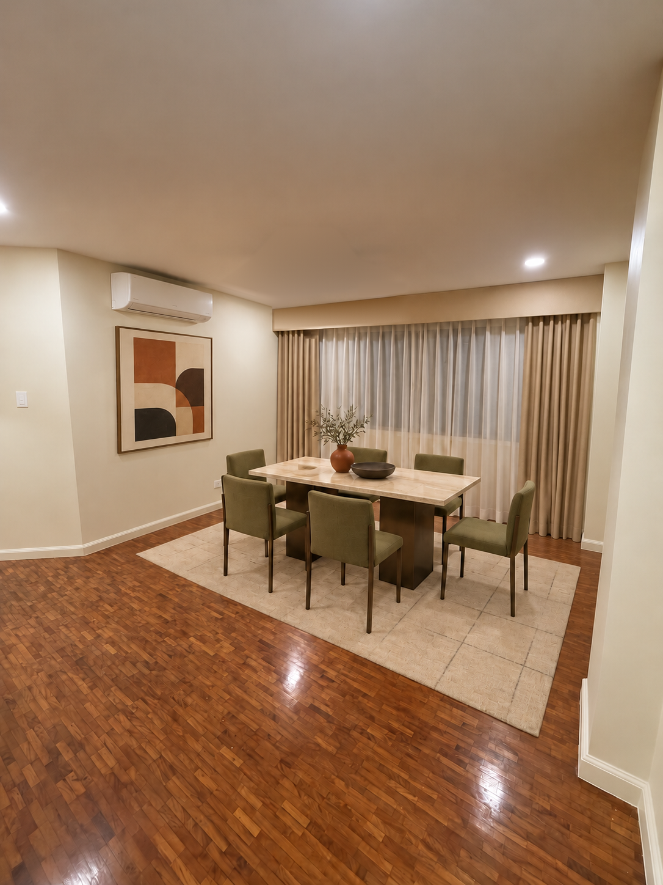
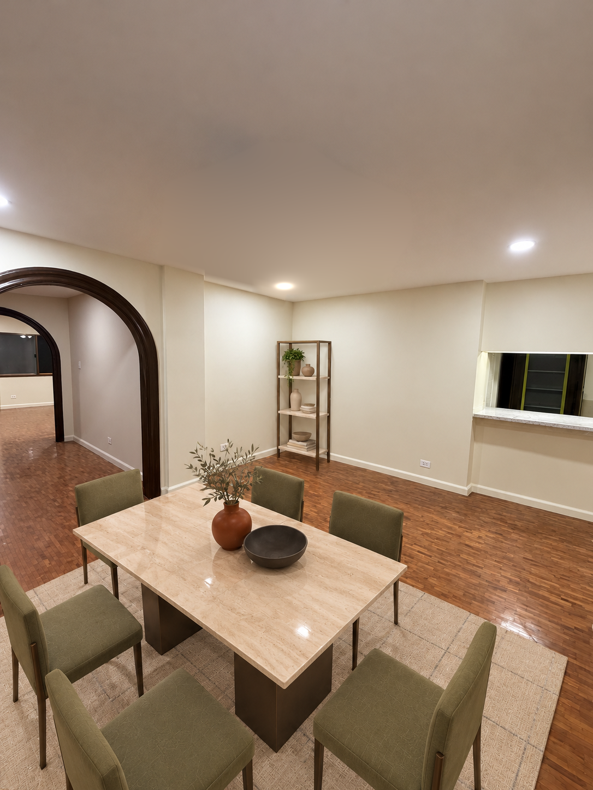
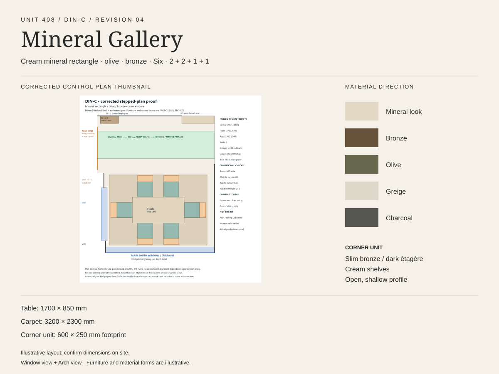

Unit 408 · Dining room · reviewed design DIN-C
Mineral Gallery
A rectangular cream mineral table and olive seating for six sit on a greige carpet. Bronze shelving and shallow corner storage are proposed while the counter-side route remains open.
Two room viewpointsNo ceiling fan proposedTable: proposed 1700 × 850 mmCarpet: proposed 3200 × 2300 mm


Materials and proposed layout

These are approximate design illustrations, not as-built photographs or purchase approval. The ceiling fan was removed from the proposed views by a local edit; existing recessed lights remain. Chair movement, curtain operation, route clearances, mounting and service access for the proposed split AC, and furniture fit still need site confirmation. Furniture, stock and prices are illustrative.